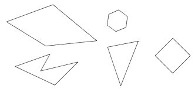
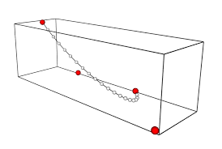
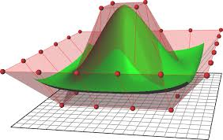
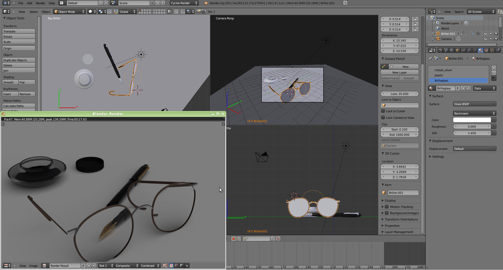

3D Graphics
3D modeling is the process of creating a three-dimensional model of an object. Using 3D, it is possible to capture size, shape, and texture of a real or imaginary object.
Areas 3D Graphics are used
- Entertainment (movies and TV)
- Games
- Advertising
- Motion graphics (TV)
- Education
- Industrial applications: design visualization etc
Graphics has many areas within it, and as this module only runs for the first semester, the emphasis is mainly on:
- Learning enough theory to understand what is happening inside Autodesk 3DS Max software
- Learning 3ds Max as an industry-standard package (the same concepts apply in other similar software)
- Creating 3D content - Modeling and Animation
(Some examples of the projects that we completed for this module can be seen at the bottom of this page)
How is a 3D image Created
The stages of creating a 3D image are:
- 3D modeling:
The process of developing a mathematical representation of any surface of an object in three dimensions
Types of 3D modeling:
-
Polygonal Modeling
Polygons are 2-dimensional shapes. They are made of straight lines, and the shape is "closed" (all the lines connect up). Polygonal modeling is modeling objects by representing or approximating their surfaces using polygons.An example of Polygonal Modeling
-
Spline Modeling
Aspline is a curve in 3D space defined by at least two control points.Example of Spline Modeling
-
NURBS Modeling
(NURBS) Non-uniform rational basis spline is a mathematical model used for generating and representing curves and surfacesExample of NURBS Modeling
-
-
Recreating physical qualities of textures and materials to make the image more realistic
All materials have different colors and surfaces. They can also reflect or absorb light. This is why it is necessary to fine-tune their transparency, gloss, smoothness or roughness etc.
-
Choosing light sources
Lighting can be artificial or natural, which influences the look of the modeled object greatly. It is important to determine brightness and depth, and also add shadows. If you do it the right way, the image will be much more realistic.
-
Placing virtual cameras
It is necessary to choose the right angles for the image.
-
Rendering
Rendering or image synthesis is the automatic process of generating a photorealistic or non-photorealistic image from a 2D or 3D model by means of computer programs. Also, the results of displaying such a model can be called a render.
 -
Postproduction
Processing of ready images with the help of Adobe Photoshop, Adobe After Effects Pro, Adobe Premier Pro, Adobe Photoshop Lightroom. On this stage, it is possible to add surroundings and additional effects or shades which would make images more atmospheric
Below are examples of the work I completed in this module
Pool Table Animation created in 3DS Studio Max
3D Still life fruit bowl modelled in 3DS Studio Max